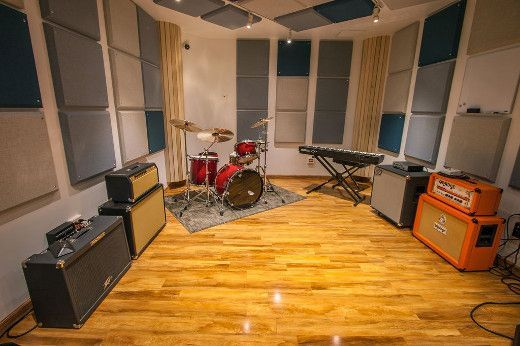
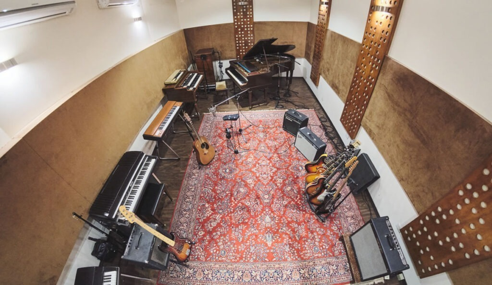
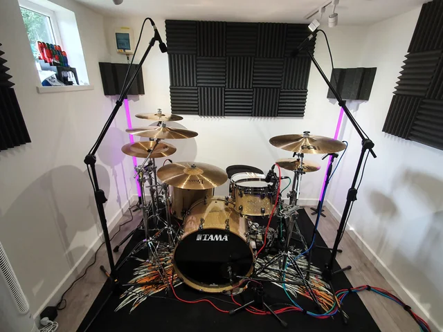

sistema gestion de salas:
Bienvenido al sistema de gestión de salas de GrooveSpace.esto es relleno.

donde nos ubicamos?
dispobibilidad de nuestras salas
CONOCE LAS SALAS!!!
ya se que se ven de distintos tamaños,toca cambiarlos


CONOCÉ GROOVESPACE
"TU lugar, TU música"
En GrooveSpace llevamos tus ensayos a otro nivel. Somos un complejo de salas de ensayo ubicado en el polo cultural de la ciudad, creado para que músicos y bandas puedan concentrarse en lo que realmente importa: hacer música. Olvidate de llamadas, mensajes y esperas para conseguir una sala. Con nuestra plataforma podés consultar la disponibilidad en tiempo real, elegir tu sala, reservar el horario que quieras y obtener tu pase digital, todo desde tu celular y en pocos minutos. ENCONTRÁ LA SALA IDEAL Elegí entre nuestras distintas opciones: Sala Standard El espacio perfecto para tus ensayos cotidianos. Sala Premium Más comodidad y equipamiento para llevar tus sesiones al siguiente nivel. Sala de Batería Un espacio preparado especialmente para quienes necesitan hacer vibrar cada golpe. Además, podés agregar equipamiento e instrumentos extra a tu reserva y conocer el costo total antes de confirmar. RESERVÁ SIN COMPLICACIONES Nuestra agenda se actualiza en tiempo real para evitar superposiciones y garantizar que tu horario esté asegurado. Consultá tus próximas reservas, revisá tu historial de ensayos y cancelá con anticipación cuando sea necesario. Menos vueltas. Más música. TODO BAJO CONTROL Desde la administración, GrooveSpace permite visualizar el estado de todas las salas y gestionar su disponibilidad, mantenimiento y equipamiento. La información de ocupación se encuentra centralizada para facilitar la organización del complejo y ofrecer una experiencia más fluida tanto para los músicos como para el personal. DISEÑADO PARA MÚSICOS GrooveSpace fue pensado para acompañarte donde sea que estés: desde el celular, en el estudio, en el pasillo o incluso antes de subir al escenario. Su interfaz oscura y sus controles de alto contraste están diseñados para que puedas reservar y consultar tus turnos cómodamente incluso en ambientes con poca iluminación. Y porque sabemos que cada proyecto musical es único, tu privacidad también importa. La información de tu banda permanece protegida y los monitores públicos muestran únicamente el número y estado de cada sala. DEJÁ DE BUSCAR UN LUGAR PARA ENSAYAR. RESERVÁ. CONECTÁ. TOCÁ(te) XD. GrooveSpace — Donde tu música encuentra su espacio. si aca si le pedi a gpt que me haga un guion,no se nada de publicidad